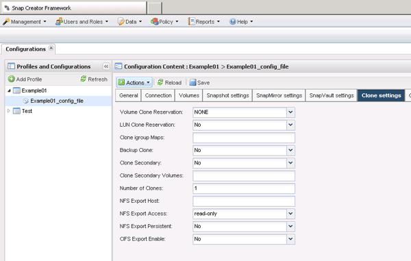

설치
설치
본 한국어 번역은 사용자 편의를 위해 제공되는 기계 번역입니다. 영어 버전과 한국어 버전이 서로 어긋나는 경우에는 언제나 영어 버전이 우선합니다.
새 백업에서 클론 생성
기여자
 변경 제안
변경 제안
별도의 PDF 문서 모음
Creating your file...
This may take a few minutes. Thanks for your patience.
Your file is ready
새 스냅샷 복사본에서 볼륨 또는 LUN을 클론 복제할 수 있습니다.
-
Snap Creator Server가 스토리지 시스템과 통신해야 합니다.
-
클론 생성 작업을 수행할 수 있는 적절한 권한으로 Snap Creator에 로그인해야 합니다.
이 클론 복제에는 새 스냅샷 복사본을 클론 복제해야 합니다.
-
Snap Creator 그래픽 사용자 인터페이스(GUI)의 기본 메뉴에서 * 관리 * > * 구성 * 을 선택합니다.
-
프로파일 및 구성* 창에서 구성 파일을 선택합니다.
-
클론 설정 * 탭으로 이동하여 설정이 올바르게 설정되었는지 확인합니다.

-
필요한 클론 유형에 따라 * Actions * 를 선택하고 다음 옵션 중 하나를 선택합니다.
-
LUN 복제입니다
-
볼륨 클론
-
-
추가 매개 변수 대화 상자에서 적절한 정책을 선택한 다음 * 확인 * 을 클릭하여 클론 생성 프로세스를 시작합니다.
-
Console* 창에서 복제 프로세스가 성공했는지 확인합니다.